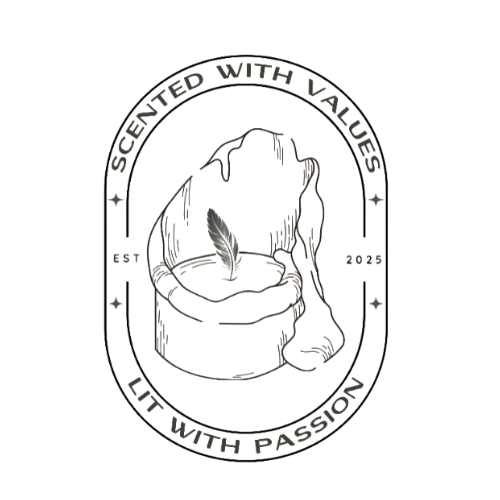

La Antorcha Flame
La Antorcha Flame (The Torch Flame) offers a premium scented candle brand that integrates the moral and intellectual legacy of Dr. Jose Rizal, the national hero of the Philippines, into sensory delights. The business provides a meaningful process rather than just selling scented candles.
Lighting one of our candles is a symbol of our dedication to the principles of social responsibility, patriotism, and self-improvement that characterized Rizal's life. We use high-quality, sustainable materials that ensure a clean burn deserving of its honorable inspiration.
Each La Antorcha Flame candle promises to light up your environment, awaken your thoughts, and maintain the flame of Filipino morality and excellence. Every product is a masterpiece of art, a vehicle for purpose and patriotism.
